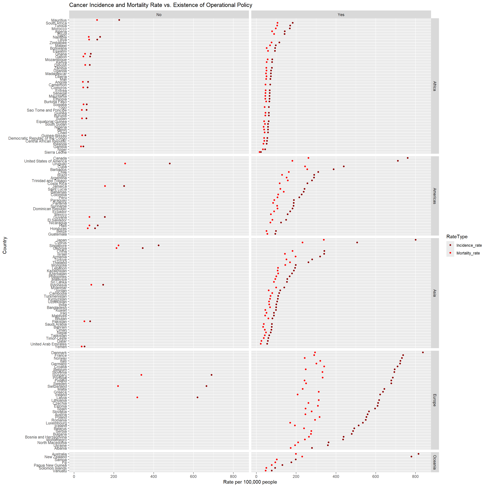
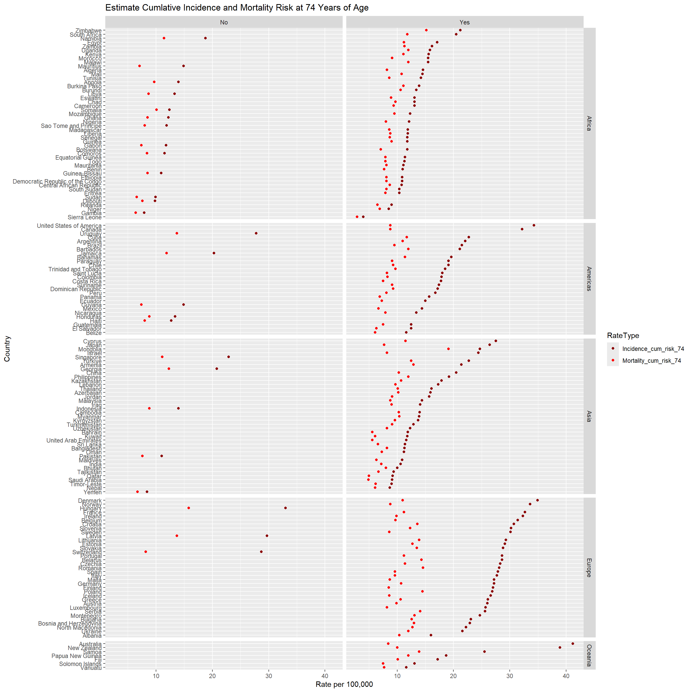
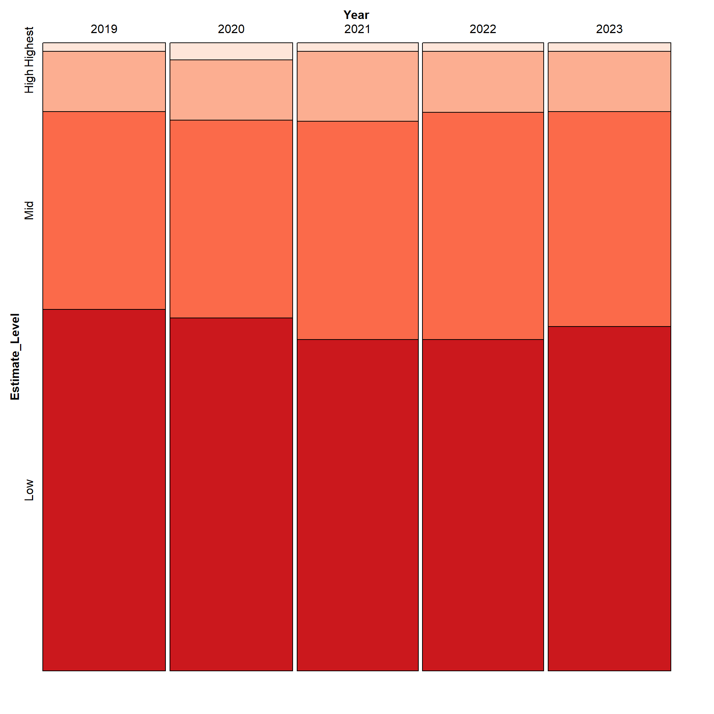
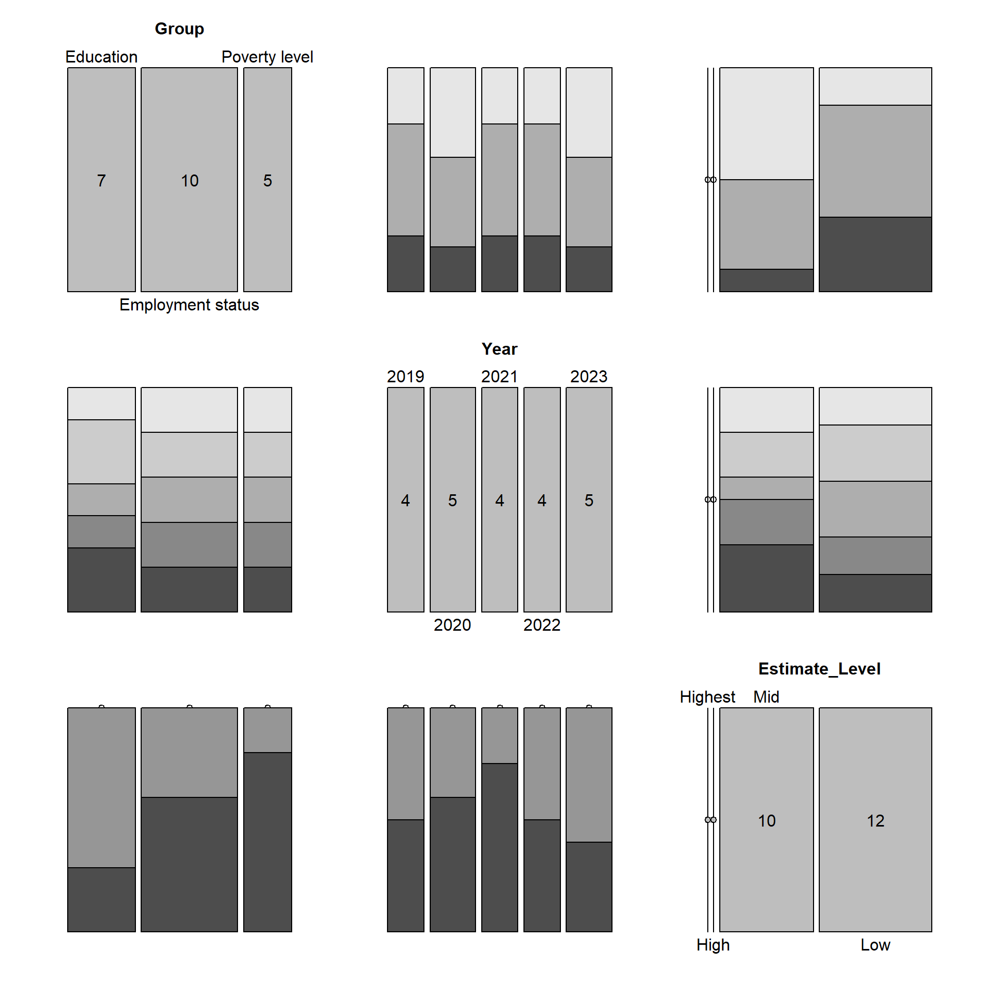
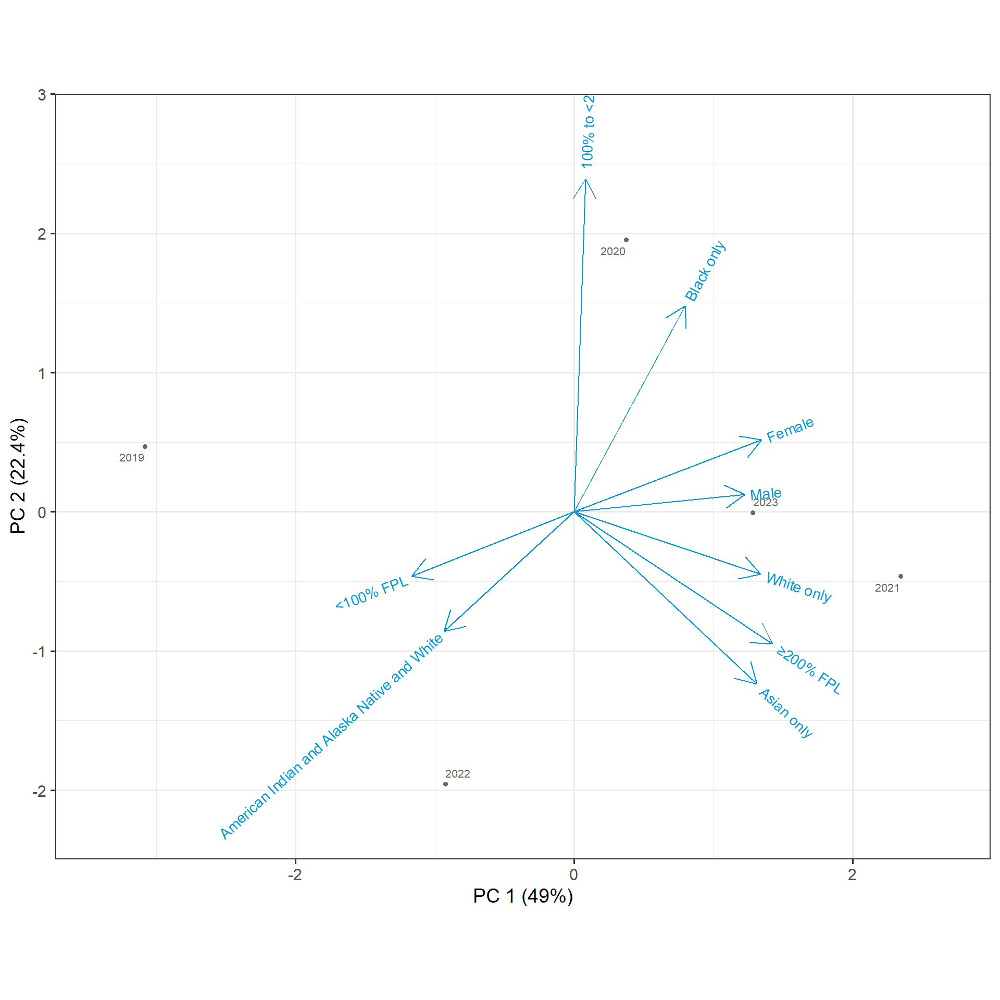

library(tidyverse)
library(ggplot2)
library(countrycode)
OperationalPolicy <- read_csv("OperationalPolicy.csv")
USOperationalPolicy <- OperationalPolicy|> filter(Location=="United States of America")
MortalityIncidenceMerge <- read_csv("mortality_incidence_merge.csv")
CDC_AllCancerData <- read_csv("CDC_AllCancerData.csv")|> filter(Estimate!="N/A")|>mutate(Estimate = as.numeric(Estimate))
OperationalPolicy <- OperationalPolicy |> mutate(Continent = countrycode(sourcevar = Location,origin = "country.name",destination = "continent"))
OperationalPolicy2021 <- OperationalPolicy |> filter(Period == "2021")|>dplyr::select(Value,Period,Location,Continent)|>rename(Country = "Location")
PolicyIndicdenceMortality <- full_join(OperationalPolicy2021, MortalityIncidenceMerge, join_by(Country)) |>filter(Incidence_rate != is.na(Incidence_rate), Value != is.na(Value))|> dplyr::select(Incidence_rate,Mortality_rate,Country,Value,Incidence_cum_risk_74,Mortality_cum_risk_74,Continent)ChristineGraphs7Dec24
library(RColorBrewer)
clevelandDotPlot <- PolicyIndicdenceMortality|>dplyr::select(Incidence_rate,Mortality_rate,Value,Country,Continent) |> pivot_longer(cols =!c(Value,Country,Continent),names_to = "RateType", values_to = "Rate" )|>filter(Value!="No response")
ggplot(clevelandDotPlot, aes(x=Rate,y=fct_reorder2(Country,RateType=="Incidence_rate",Rate,.desc=FALSE), color =RateType)) +
geom_point()+
facet_grid(Continent~Value, scales ="free_y",space="free_y")+
scale_colour_manual(values=c("darkred","red"))+
scale_fill_manual(labels = c("Incidence Rate", "Mortality Rate"))+
labs(title = "Cancer Incidence and Mortality Rate vs. Existence of Operational Policy", x = "Rate per 100,000 people", y="Country")
In this plot we explore if there are any correlations between Cancer Incidence Rate, Continent, Country and existence of Operational Policy’s. Across all types of operational policy and continents we see that cancer morality rate is always lower than cancer incidence rate. For all Operational Policies and Continents except for Europe, as the Incidence Rate increased, so does the mortality rate generally with the same increasing gap between Incidence Rate and Mortality Rate. However, In Europe, for Countries that have Operational Policies in place for cancer generally the gap between Incidence and Mortality rate seems to increase and shows that Mortality Rate seems to plateau at 375 per 100,000 people even though, Incidence Rate is not at a consistent value for those countries. This could indicate that the countries that have a larger gap between mortality and incidence rate either have more sensitive cancer detection methods , more rigorous cancer treatments available or easier access to health care. To further explore this question, we would need to look more into the types of cancer detection methods, treatments and compare access to health care for these countries. For example, it would interesting to compare Denmark and Poland more closely as their mortality rate is similar, but incidence rate is very different for these countries.
One limitation of this plot is that the rates are from 2022 and the Operational Policy data is from 2021. During the data collection process, we were unable to find rates from 2021 or Operational Policy data for 2022 based on how the data is reported. Therefore, this plot does not represent the same year; however, we chose to move forward with this plot because there is potential for correlation and trend discovery between Operational Policy in 2021 and Rates in 2022 if the Operational Policies do not change. Afghanistan and Lesotho were filtered out of the data since they have no response for Operational Policy and their rates do not add value to the analysis since their rates are same.
clevelandDotPlot <- PolicyIndicdenceMortality|>dplyr::select(Incidence_cum_risk_74,Mortality_cum_risk_74,Value,Country,Continent) |> pivot_longer(cols =!c(Value,Country,Continent),names_to = "RateType", values_to = "Rate" )|>filter(Value!="No response")
ggplot(clevelandDotPlot, aes(x=Rate,y=fct_reorder2(Country,RateType=="Incidence_cum_risk_74",Rate,.desc=FALSE), color =RateType)) +
geom_point()+
facet_grid(Continent~Value, scales ="free_y",space="free_y")+
scale_colour_manual(values=c("darkred","red"))+
scale_fill_manual(labels = c("Incidence Rate", "Mortality Rate"))+
labs(title="Estimate Cumlative Incidence and Mortality Risk at 74 Years of Age", x = "Rate per 100,000", y= "Country")
In this plot, we investigate the cumulative risk cancer incidence and mortality by age 74 and compare it by country, operational policy and continent. Countries that did not have an operational policy in-place have similar risks for dying from cancer at age 74 while the incidence rate varies in this group. In the yes there is an operational policy group, there the mortality risk rate is generally similar across all continents; however incidence rate seems to the highest in Europe and some countries in the Americas and Asia. The trend observed in European countries that have operational policies suggest that there is excellent treatment opportunities or perhaps the cancers that people have risk for are not deadly. The previous statement would need to be investigated further to understand the exact cause of this relationship. In Africa, countries that have existing operational policies show a small gap between mortality and incidence rate.
In this plot, we remove the no response group at their estimated rates where similar and we could draw any conclusion for that group.
Amount of High, Mid and Low Data Points for Cancer Estimates Across All Years for All Groups and Subgroups:
library(vcd)Loading required package: gridlibrary(grid)
AllCancerData_lumps <- CDC_AllCancerData |> mutate(Estimate_Level = ifelse(Estimate>30,"Highest",ifelse(Estimate>20, "High",ifelse(Estimate>10,"Mid", "Low"))))
AllCancerData_lumps$Estimate_Level <- factor(AllCancerData_lumps$Estimate_Level) |> factor(levels=c("Highest","High","Mid","Low"))
vcd::mosaic(Estimate_Level ~ Year,
data = AllCancerData_lumps,
direction = c("v", "h"),
highlighting_fill = RColorBrewer::brewer.pal(4, "Reds"))
Based on this mosaic plot, the proportions of groups that have low, mid or high percentages of having cancer is generally the same. In this graph, the Low category represents less that in this group there is less than 10% of people have cancer, while mid corresponds to greater than 10% and less than 20%. Finally, the High estimate corresponds to greater than 20%, but less than 30% and the Highest group is great than 30%. In this data, the highest percentage of a group that has cancer is 32.6% which results in even bin intervals for the data. While there is a slight decrease in the proportion of groups that are in the Mid percentage bin, across the years, we generally see cancer percentages across groups are generally of equal proportions. While we are not tracking individual groups in this plot, we are able to see how proportions of cancer percentages vary over the years as a whole. From this graph, we can see that we will need to investigate individual groups more closely to identify where the differences come from.
AllCancerData_lumps_new_4 <- AllCancerData_lumps |> filter(Group == c("Education","Employment status", "Poverty level"))
pairs(table(AllCancerData_lumps_new_4[,c(1,3,6)]),highlighting=2)
To begin analyzing the differences amount groups and the respective cancer rates, we chose to look at the difference in proportions of Education, Employment Status and Poverty Level and the corresponding cancer estimate level across years. We see that more education subgroups are associate with the 10-20% cancer mid bin as opposed to the low or less than 10% cancer rate bin. The employment status groups generally have the same proportion in the mid and low estimate levels and there seem to be no high or highest estimate levels in these groups. We also see that for some years, there are different proportions of responses in each group - indicating that we do not have the same subgroups responding over the years. The Education group has more mid estimates as opposed to the employment status and poverty level groups. It be interesting if the education group could be divided into their respective employment status group.
One limitation of this data is that we are comparing the estimates across different groups and some individuals may belong to multiple groups; however, the reported data does not show where individuals are repeated.
CDC_CancerData_groups <- CDC_AllCancerData |>mutate(Group =ifelse(Group =="Poverty level", Group, ifelse(Group == "Race",Group,ifelse(Group=="Education status", Group, ifelse(Group=="Sex",Group,NA)))))|>na.omit()|> dplyr::select(Subgroup,Estimate,Year)|>pivot_wider(names_from=Year,values_from = Estimate)|>na.omit()|>pivot_longer(names_to="Year", cols=!Subgroup,values_to="Estimate")|>pivot_wider(names_from=Subgroup,values_from = Estimate)
library(redav)
redav::draw_biplot(CDC_CancerData_groups)
We can use a PCA plot to discover if certain subgroups may be correlated with one another in terms of cancer estimates. It may be possible that the correlation comes individuals who belong to one subgroup may belong to the second subgroup. It seems that the subgroup Asian only could be correlated with cancer estimates with the >= 200% FPL and White Only subgroup. While the subgroups <100% FPL and Alaska Native and White may be correlated. This graph is not meant to imply resulting causation but can be leveraged to look into how different subgroups over lap and if overlapping subgroups may have higher or lower rates of cancer.
library(parcoords)
CDC_CancerData_groups3 <- CDC_AllCancerData |>mutate(Subgroup = ifelse(Group== "Health insurance coverage: 65 years and older", paste(Subgroup,"(Above 65yo)"), ifelse(Group =="Health insurance coverage: Younger than 65 years", paste(Subgroup, "(Below 65yo)"), Subgroup)))|> dplyr::select(Group, Subgroup,Estimate,Year)|>pivot_wider(names_from=Year,values_from = Estimate)|>na.omit()|>rename(Y2019="2019",Y2020="2020",Y2021="2021",Y2022="2022",Y2023="2023")
CDC_CancerData_groups3<-CDC_CancerData_groups3[order(-CDC_CancerData_groups3$Y2019),]
parcoords(CDC_CancerData_groups3,
rownames = FALSE,
brushMode = "1D-axes-multi",
reorderable = TRUE,
alphaOnBrushed = 0.1,
autoresize = TRUE,
queue = TRUE,
color = "red",
height=1600,
width=1600)By plotting all subgroups on the parallel coordinates plot, we can identify which subgroups have which estimate percent per year for cancer. Additionally, we are able to see that for most subgroups, the cancer rate stays the same across the sample years. We only see a change in cancer rate for the Alaska Native and White, health insurance subgroups and without disability subgroups. This graph gives an overview time series for all groups and is what we chose to build our d3 interactive plot from. This can be a starting point that allows the observer to identify which individual subgroups to explore more closely to see cancer rates over the years.